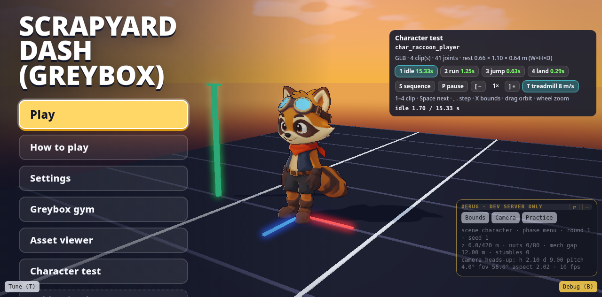
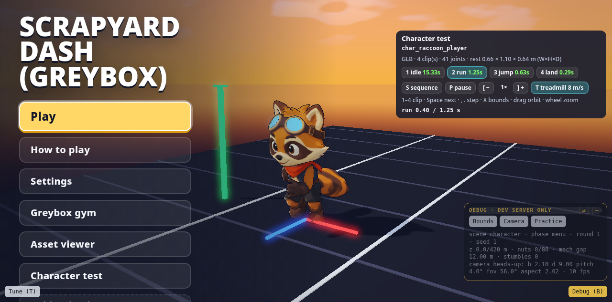

The raccoon and the junk mech went through the same chain: a fal turnaround sheet → Tripo multiview mesh → Tripo auto-rig → Tripo preset clips → a rerunnable Blender script that fixes scale, pivots, loops and materials. Every paid step waited for a yes from Chong-U.
1 · fal turnaroundfront, 3/4, side, back on flat gray
Why crop the sheet: Tripo multiview takes front, left and back slots, with no 3/4 slot. Grok Bot cropped the views out of the sheet and left the 3/4 panel unused.
What the Blender script does (rerunnable, never edits the provider files)
Rotates the front to glTF +Z, scales to exactly 1.100 m, puts the pivot at the feet.
Resamples clips at 24 fps: idle 15.333 s loop, run 1.250 s loop, jump 0.625 s (matches sim airtime), land 0.292 s.
Closes loop seams: the run's source seam was 28° on a forearm, eased to 0.00°, hip drift 0.
Splits the goggle lenses (62 faces) into an emissive cyan material for contrast against the track.

Character test scene (?scene=character), idle · share/media/kickoff/char-test-idle.png

Character test scene, run on the treadmill · share/media/kickoff/char-test-run.png
The character test scene gives a clip picker, step/speed controls, a treadmill and orbit, without touching the gym. That was Chong-U's ask: "don't overwrite the gym".
Who animated it?
Chong-U (owner prompt) · Nov 4, 12:46 PM
can you confirm who animated the character
Grok Bot
Tripo animated the raccoon — auto-rig (biped, 41 bones) plus retarget presets idle / run / jump / jump_down, then Blender resampled and loop-cleaned those clips. There is no death clip in the GLB yet (only idle, run, jump, land)
With no death clip, the game-over pose became code: an idle crossfade plus a procedural tip back (975930b). No extra credits.
The junk mech
Mech turnaround: fal edit using a crop of mockup D as identity reference · share/media/kickoff/char_junk_mech-turnaround.pngstomp_loop contact sheet · share/media/kickoff/mech-stomp-loop-contact.png
Chong-U (owner prompt) · Nov 4, 2:14 PM
let's have the big mech better animated for their walk
Chong-U (owner prompt) · card answer
Yes — spend ~65 Tripo credits, auto-rig the mech, and wire the walk into Play
Step
Detail
Cost
Turnaround
fal edit from a D.png crop
$0.0471
Mesh
Tripo P1 multiview (front/back), 11,014 tris, 5 m tall
50 credits
Rig + clips
biped, 41 joints; biped:idle + biped:walk in place
45 credits
Polish
normalize_char_junk_mech.py: stomp_loop 1.583 s (2 steps, seam 0.00°), idle 15.33 s; emissive face splits for the yellow eye, cyan eye and orange lamps
free
The approved budget was ~65 credits; the job came in at 45. Asking first with a number, then reporting the real number, is the habit.
Credit discipline
The brief says "ask before each spend". Every paid Tripo job above sat behind a yes on a card or in chat. Free steps (anim check) ran without asking. The untouched Tripo download plus the normalise script are kept as the source of truth, so a GLB can be rebuilt without paying again.
Tripo job
Credits
Balance after
Raccoon mesh
50
2550
Raccoon rig + 4 clips
65
2485
Mech, barrel, car meshes
150
2335
Mech rig + idle/walk
45
2290
Crane + scrap plane (text → model)
80
2210
Started at 2600 credits. Ledger from docs/direction/kickoff-raccoon.md, commit messages and docs/direction/env-dressing.md.
Takeaways
The turnaround prompt is the spec: A-pose, empty hands, legs apart, tail clear of the legs, flat gray, no props. Those choices are what make auto-rigging work.
Run the free rig check before paying for a rig.
Tripo's preset clips get you 80% there; a Blender script fixes loop seams, timing to match the sim, and pivots.
Build a preview scene for clips so you judge animation at game speed, not in a thumbnail.
Missing a clip? A short procedural pose in code can be enough (the death tip-back).
Character turnaround reference sheet for a 3D game asset pipeline (image-to-3D).
Subject only: ONE small spunky cartoon raccoon hero from a family-friendly scrapyard runner game. Warm orange-brown and tan fur, dark brown raccoon mask around big friendly eyes, cream muzzle and cheeks, rounded ears with cream inner fur, bushy tail with dark brown rings. Blue-lensed aviator goggles with a brown leather strap pushed up on the forehead. A bright red-orange scarf knotted at the neck with a short tail. Simple dark slate-blue vest, brown belt, dark shorts, chunky brown boots, dark gloved hands. Chibi-heroic proportions: slightly large head, compact athletic body, short legs (target ~1.1 m tall in-game). Clear silhouette, readable from a distance.
Composition: a clean orthographic character turnaround sheet in a single horizontal row of four full-body views of the SAME character, left to right: (1) front view, (2) three-quarter front view, (3) side profile view facing left, (4) back view. Wide even gaps between figures so they do not overlap, same scale, same height, feet on one implied ground line, whole body including ears, tail and feet fully inside the frame. Neutral A-pose rest pose: arms held straight out and angled down about 45 degrees away from the body, hands open and empty, legs slightly apart, tail clearly visible and not touching the legs. Neutral happy expression. Soft even studio lighting, no cast shadows, no rim glow. Plain flat pale studio gray background (#D0D0D0). No props, no weapons, no held items, no environment, no text, no labels, no panel borders, no HUD, no neon signs, no mech.
Style: stylized low-poly 3D toon game character render, flat colour with gentle cel shading, bold simple shapes, clean edges, no photoreal fur strands. Match the raccoon hero from Scrapyard neon direction D: goggles + red scarf, upbeat and readable.
Exclusions: no green screen, no chroma key, no magenta backdrop, no multiple different characters, no extra figures, no weapons or tools in hands, no scrapyard background.
Character turnaround reference sheet for a 3D game asset pipeline (image-to-3D). Use the attached image ONLY as the identity reference for the giant junk mech (its shape, face and patchwork colours); ignore its sky, debris, camera angle and pose.
Subject only: ONE giant friendly-menacing junkyard chaser mech from a family-friendly scrapyard runner game, about 5 m tall. A hulking boxy robot built from chunky patchwork scrap metal plates in mixed dusty colours (rust orange, brick red, faded teal blue, mustard yellow, cream, slate purple), with visible bolts and riveted seams. Big blocky torso and broad shoulders, thick short legs with chunky block feet, long heavy arms with blocky fists. A squarish dark gray-green head with two mismatched round eyes: the left eye a big glowing neon yellow ring, the right eye a glowing neon cyan-blue ring, plus a wide toothy grin of square cream teeth. Two thin antennae on top of the head with small red flags. Its right forearm ends in a large red horseshoe magnet with silver tips instead of a fist (the magnet is part of the arm, not a held prop). Small neon orange emissive lamp accents on the chest and shoulder joints. Toy-like, chunky, readable silhouette from far away.
Composition: a clean orthographic character turnaround sheet in a single horizontal row of four full-body views of the SAME mech, left to right: (1) front view, (2) three-quarter front view, (3) side profile view facing left, (4) back view. Wide even gaps between figures so they do not overlap, same scale, same height, feet on one implied ground line, whole body including antennae, magnet and feet fully inside the frame. Neutral A-pose rest pose: arms held out and angled down about 45 degrees away from the body, not touching the torso, legs slightly apart, standing straight. Soft even studio lighting, no cast shadows, no rim glow. Plain flat pale studio gray background (#D0D0D0).
Style: stylized low-poly 3D toon game character render, flat colour with gentle cel shading, bold simple chunky shapes, clean edges, matte painted metal. Match the junk mech from Scrapyard neon direction D: dusk-friendly palette, neon emissive eyes.
Exclusions: no green screen, no chroma key, no magenta backdrop, no sky, no sunset, no flying debris, no scrapyard background, no raccoon, no other characters, no extra figures, no text, no labels, no panel borders, no HUD, no ground shadow.